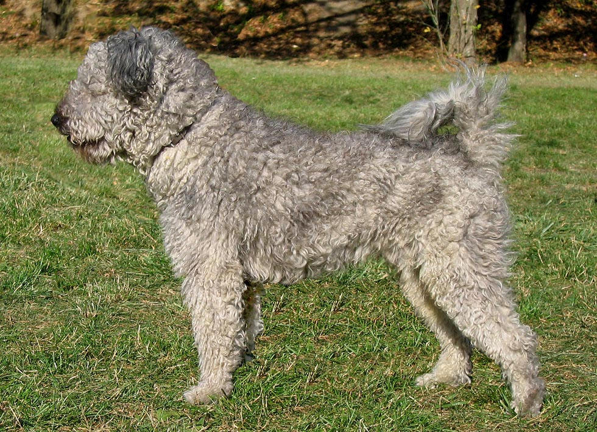

Komondor

A kunlakta vidékek pásztorkutyája lehetett. A komondor valószínűleg a kuvaszhoz hasonlóan őseinkkel a népvándorlás idején került a Kárpát-medencébe, de nem kizárt, hogy a kunok hozták be nagy testű pásztorkutyáikat a 13. század közepén. Ezt bizonyítják részben a romániai helynevek, részben pedig Bökönyi Sándor szíves szóbeli közlése, miszerint az ázsiai sztyeppövezet nagy testű pásztorkutyái kuvasz típusúak, de Ukrajnában - a hajdani Kumániában - ma is komondor típusú pásztorkutyákat találunk. Feladata nem a terelés volt, hanem a kuvaszhoz hasonlóan a nyáj megvédése a ragadozóktól és a tolvajoktól, hiszen őseink legfontosabb vagyontárgya az élő állat volt. Az éjjeli őrködés során a komondort fehér színe segítségével különböztették meg a támadóktól.
Nevezték gubancos magyar juhászkutyának, selyemszőrű farkasebnek, pusztai komondornak, lompos szőrű komondornak, bagolyszemű komondornak vagy csak egyszerűen komondornak, amely szó a nyelvemlékek szerint mindig a nyájat őrző nagy testű kutyákat jelölte.
Pethe Ferenc 1815-ben megjelent Természet Históriájában egy rajzot is közöl a kutyáról, amely összetéveszthetetlenül felismerhető. Az első ismert rajz egy nyírt szőrű, vágott fülű, szöges nyakörves kutyát ábrázol. Az első részletesebb jellemzés 1841-ben készült, ekkor a komondor ritka fajtának számított, 1899-ben a szegedi országos kiállításon egyetlen példányt mutattak be. 1909-ben kihalófélben lévő, veszélyeztetett fajtaként említik. A pásztorok nagyra becsülték kutyáikat, igyekeztek fajtatisztán tenyészteni. 1924-ben a magyar fajták közül elsőként megalakult a tenyésztőszervezete, majd 1935-ben elkészült az első standardja, Anghi Csaba munkája, amelyet változtatásokkal 1960-ban fogadott el a Nemzetközi Kinológiai Szövetség. Régebben többféle tájfajtája létezett. Megkülönböztettek erdélyi, kunsági, bakonyi, lompos elnevezésű változatokat. A jelenlegi állomány és a standard alapját Kovásznay Zsigmond, üllői tenyészetének lompos szőrű komondorai alkották.
A második világháborúban a komondorpopuláció ugyanúgy nagy veszteségeket szenvedett el, mint a kuvaszok, és a kollektivizálás időszaka sem tett jót az egyedszámnak. Utána viszont megváltozott a tenyésztés iránya: míg korábban az ősi értékek megőrzésére helyezték a hangsúlyt, később az esztétikai megjelenés vált fontossá. A szőrzet egyre inkább szalagossá, zsinórossá vált, eltűnt a krémszínű árnyalat. Sajnos a küllemi homogenizálást nem követte a belső tulajdonságokra való odafigyelés ezért a komondor állomány viselkedésében erősen heterogén jelleget mutat. Állomány szinten egyre kevesebb egyed mutatja a fajta ősi jó tulajdonságait, a karakánságot, bátorságot, hűséget és méltóságteljességet. A törzskönyvezett egyedszám is lejtmenetben van, míg a kilencvenes években 10000-20000 körüli egyedszámban volt megtalálható a fajta, addigra ez napjainkban a 2000-et sem éri el. A törzskönyv nélküli állomány ennek kb. a kétszerese lehet.
A komondor legfeltűnőbb sajátossága a szőrzete, amelyhez hasonló csak a pulinak és a bergamói pásztorkutyának van. Mérete mellett ez a szőrzet teszi a komondort impozánssá, látványossá. Kialakulásában valószínűleg szerepe volt az ázsiai puszták szélsőséges éghajlatának. Ezért általában a komondornak nincs szüksége házra, csak egy helyre, ahova elhúzódik a csapadék elől. Ápolni nem kell minden nap, elég az összenemezesedett csomókat időnként széttépni, egyébként teljesen öntisztuló. Régen a pásztorok a birkák mellett a komondorról is lenyírták a szőrt, ez a minőségének, úgy látszik, nem ártott. A kiállításon elvárás a nagy szőrzet, a mindennapi életben és a dolgozó kutyákat, egészségi és állatjóléti okokból nyírni szükséges. Jelenleg csak fehér (csontfehér) színben tenyésztik, de régebben létezett sárga, foltos, vadas színű változata is.A komondor legfeltűnőbb sajátossága a szőrzete, amelyhez hasonló csak a pulinak és a bergamói pásztorkutyának van. Mérete mellett ez a szőrzet teszi a komondort impozánssá, látványossá. Kialakulásában valószínűleg szerepe volt az ázsiai puszták szélsőséges éghajlatának. Ezért általában a komondornak nincs szüksége házra, csak egy helyre, ahova elhúzódik a csapadék elől. Ápolni nem kell minden nap, elég az összenemezesedett csomókat időnként széttépni, egyébként teljesen öntisztuló. Régen a pásztorok a birkák mellett a komondorról is lenyírták a szőrt, ez a minőségének, úgy látszik, nem ártott. A kiállításon elvárás a nagy szőrzet, a mindennapi életben és a dolgozó kutyákat, egészségi és állatjóléti okokból nyírni szükséges. Jelenleg csak fehér (csontfehér) színben tenyésztik, de régebben létezett sárga, foltos, vadas színű változata is.
Kuvasz

Neve eredetéről megoszlanak a vélemények. Egyes források szerint türk eredetű szó, és olyan verzió is van miszerint az ótörök küvez, vagyis "büszke"[1] szóból ered, amelyhez közvetlenül kapcsolódik a kipcsák qubas (egy kutyafajta). Ezek viszont közvetlenül származtathatók a perzsa kuwāsa (= minőség, vagyon) szóból, ami a legrégebbi ismert szóalak, de mégis ez hasonlít leginkább a magyar névhez. A kuvaszról szóló írásos emlékek feldolgozását nehezíti az a tény, hogy a fajtát több néven is illették: simafejű magyar komondor (a komondor volt a borzasfejű), farkaseb, kovasz, parasztkutya. A kuvasz szó jelentett egyszerűen keveréket is.
Czuczor Gergely és Fogarasi János szerint mind kutya, mind pedig kuvasz szavunk hangutánzó kifejezés, miként számos más nyelvben is. S hozzá teszik még: Platón szerint a kutyát jelentő küón (κύων) szót a görögök a szkíták nyelvéből kölcsönözték.[2]
Története
Őseinkkel a népvándorlás során jött a Kárpát-medencébe, mint a nyájak nagy testű, határozott fellépésű védelmezője. A Keszthely melletti Fenékpusztán feltárt honfoglalás kori leletben talált kutyacsontokról kiderült, hogy a mai kuvasz ősétől származnak.
Az Árpád-házi királyoknak külön bölényvadász mesterei voltak, akik a kuvaszt tartották a legalkalmasabbnak a bölények felhajtására és vadászatára.[3]
Hunyadi Mátyás kedvelte a fajtát, udvarában hajtóvadászatokon is használták, főleg farkas és vaddisznó ellen. A 15. században fellendült a marhakereskedelem, és a hatalmas magyar szürke szarvasmarha-gulyákat kuvaszok kísérték a nyugat-európai állatvásárokra, többek között Nürnbergbe. A nyájak napi 20-25 kilométert tettek meg, s őrzésükre fáradhatatlan, mindig éber, bátor állatokra volt szükség. A hajcsárok a vásárokon nemcsak a marhákat adták el, hanem nagyon gyakran néhány kutyát is. Így előfordulhat, hogy ezek a példányok részt vettek a hasonló nyugat-európai fajták kialakulásában. A kuvaszok megbecsültségére jellemző, hogy Zrínyi Miklós a Szigeti veszedelemben a kuvaszt mint kutyafajtát említi.
Pumi

A pumi őshonos kutyafajtánk, hazánk területén, a 17-18. század folyamán alakították ki a puli és a merinói juhnyájakat hazánkba kísérő terrier jellegű pásztorkutyák kereszteződéséből. Így jött létre a pulinál rövidebb szőrű, lebicsakló fülű terelőkutya, amely gyorsan népszerű lett a pásztorok között, hiszen minden jószág mellett használható volt. A pumi elnevezést, amely valószínűleg Pomeránia nevéből származik, először 1795-ben írták le, majd Pethe Ferenc is megemlíti a Természet Históriája című művében 1815-ben. Első ismert tenyésztője gróf Festetics Sámuel volt.
Sokáig a pulit és a pumit nem tekintették különálló fajtáknak, csak 1920-ban történt meg a két fajta elkülönítése. A pumi első fajtaleírását 1924-ben dr. Raitsits Emil készítette. A második világháború után az 1960-as években kezdődött újra a tenyésztés, meglehetősen heterogén küllemű egyedekkel. Az Ócsag Imre által irányított nemesítés sokat javított a fajta megjelenésén.
A pumi a kilencvenes évekig viszonylag ismeretlen maradt hazánkban, miközben a skandináv országok lakói, elsősorban a finnek megkedvelték ezt a fajtát. Hasonlóan a mudihoz, ebben a fajtában is felismerték azokat az értékeket, amelyeket a természetkedvelő északiak keresnek egy kutyában. A kilencvenes évek vízválasztó abból a szempontból is, hogy a pumi szinte robbanásszerűen ismert lett Magyarországon is, nem utolsósorban az agility elterjedésének, ismertségének köszönhetően, hiszen a pumit szinte erre a sportra találták ki. Számos törzskönyvezett pumi ma is pásztorok mellett dolgozik. A fajta törzskönyve ma is nyitott.
Külleme és jelleme
A pumi közepesnél kisebb méretű kutya, amely megjelenésében le sem tagadhatná a terrier ősöket. Szőrzete 4–7 cm hosszú, tincses, nem nemezesedik, de rendszeres ápolást igényel: ajánlatos olykor trimmelni és ollóval igazítani. Leggyakrabban a szürke különböző árnyalataiban fordul elő, de van fehér, fekete és fakó színű is.Külleme és jelleme
A pumi közepesnél kisebb méretű kutya, amely megjelenésében le sem tagadhatná a terrier ősöket. Szőrzete 4–7 cm hosszú, tincses, nem nemezesedik, de rendszeres ápolást igényel: ajánlatos olykor trimmelni és ollóval igazítani. Leggyakrabban a szürke különböző árnyalataiban fordul elő, de van fehér, fekete és fakó színű is.
A pumi egy négy lábon járó vitalitásbomba, amelynek energiája kimeríthetetlen. Rendkívül éber, véleményének mindig hangos csaholással, ugatással ad hangot. Nagyfokú mozgásigényét leginkább kertes házban képes kielégíteni, lakásban csak az tartsa, aki naponta több órát tud rá szánni. Gyorsan tanul, hihetetlenül mozgékony, ideális a különböző kutyás sportok űzésére. Szeret szerepelni, a figyelem középpontjában lenni, „bohóckodni”, ezért elsősorban aktív, mozgalmas életet élő családoknak ajánlható.
Puli

A puli egyike a kilenc magyar kutyafajtának, és világszerte a legismertebb terelőkutyafajta közülük. Mintegy száz éve szervezetten tenyésztik.
Ősei a pásztoremberek nélkülözhetetlen segítői voltak. Akár egy marhát is adtak egy-egy híres terelő kölykéért. A külsejével nem törődtek. A puli fennmaradása a szorgalmának, találékonyságának, intelligenciájának tudható be. A zord körülmények, a kemény munka edzetté, ellenállóvá és igénytelenné tették a fajtát, ezek a vonások pedig a mai napig jellemzőek a pulira.
Története
A puli története messzire nyúlik vissza. Már a Kr. e. 4. évezredből maradt ránk olyan sumer szobor, amely egy pulihoz nagyon hasonlító kutyát ábrázol. Annyi bizonyos, hogy őseinkhez valamikor ázsiai vándorlásuk közben került, s együtt érkeztek a Kárpát-medencébe, ahol évszázadokig mint a pásztorok hű segítője szerzett magának hírnevet. Más forrás szerint a „...puli őseinek csontjai a régészeti ásatásokon nem kerültek elő a honfoglalás kori, de még az Árpád-kori leletek között sem. Helyette nagy testű, agárra emlékeztető kutyák maradványaira bukkantak a régészek.”[1] Első leírója Heppe volt 1751-ben, és utána sokan megemlítik írásaikban a puli bozontos szőrét, hihetetlen intelligenciáját és munkabírását.
Az 1900-as évek elején megváltozott a mezőgazdaság szerkezete, csökkent a legelők területe és ezzel a puli munkalehetősége is. A kipusztulástól Raisits Emil és munkatársai tevékenysége mentette meg. Egyre kevesebb kutya maradt meg eredeti munkakörénél, a puliból sztárfajta lett. Példányai bekerültek a tanyákra, falvakba, városokba, mint házőrzők, testőrök vagy kedvencek, esetleg rendőrkutyák. 1935-ben Anghi Csaba vezetésével állították össze a fajtaleírását. A második világháború a nagy létszámú, erős populációban nagy károkat nem tett, de a tenyésztést néhány évre visszavetette.
Az 1960-as években elkezdődött a puli tervszerű tenyésztése Ócsag Imre vezetésével, aminek során a fehér, majd a szürke és a maszkos fakó szín kitisztult, a szőrzet minősége javult. Ma a puli, úgy tűnik, visszatalál eredeti foglalkozásához, hiszen az 1990-es évektől kezdve kerülnek megrendezésre a terelési ösztönpróbák, amelyeken pulik is részt vesznek. Bebizonyosodott, hogy a hosszú ideje megváltozott körülmények között élő pulinak a legkevesebb a terelőhajlama a három terelőkutyafajta közül, de a helyzet azóta sokat javult. A külföldi fajták térnyerése mellett a puli népszerűsége sokat csökkent az utóbbi években, de ez megakadályozza azt is, hogy a fajta túltenyésztett divatkutyává váljon.
Rövidszőrü vizsla

A rövidszőrű magyar vizsla világszerte az egyik legismertebb magyar vadászkutya. Legközelebbi rokona a drótszőrű magyar vizsla.
Régi magyar vadászkutya, amely több fajta keresztezéséből alakult ki. Már honfoglaló őseink mellett, akik szenvedélyes vadászok voltak, feltűnt egy vadászkutya, amely követte őket a vándorlások során a Kárpát-medencébe. Sárga, esetleg barna színű, néha foltos volt és a vadászat minden mozzanatánál segítségére volt a vadásznak. Ez a mára kihalt kopó volt a mai magyar vizsla őse. Legkorábbi ábrázolása az 1100 és 1120 között készült Codex Albensisben található, de a Képes krónikában is felbukkan a „kajtárkodó kopó” képe. Hunor és Magor találkozása a csodaszarvassal című képen négy jól felismerhető vizsla látható. A vizsla említésével nemeseink levelezésében is gyakran találkozhatunk. A magyar nyelvben a vizsla szót, valószínűleg a vigy, vizs, vis alakból képezték, melynek jelentése vigyáz vagy vizslat.[1]
A török hódoltság korában megjelent hazánkban a törökök sárga vadászkutyája a sloughi, amely kereszteződött az itt élő vadászkutyákkal és kialakult vizslánk alaptípusa. Az 1731-ből származó adat szerint a trencséni Zay család kezdett először foglalkozni a tenyésztésével, és valószínű, hogy egy Angliából származó spanyol vizslát is bevontak a tenyésztésbe. Ekkor még a vizsla gesztenyebarna színben vagy fehér jegyekkel is létezett. A 19. század végén megritkult az állomány, ekkor vonták be a tenyésztésbe a pointert és a német rövidszőrű vizslát.
1920-ban megkezdték a fajta törzskönyvezését, 1928-ban elkészült a fajtaleírás (standard), és 1935-ben az FCI bejegyezte a hivatalosan elismert fajták közé. A második világháború után a veszteségeket pótlandó a gödöllői tenyésztelepen indult újra a tenyésztése. Ma már nem tartozik a veszélyeztetett fajták közé, hiszen a világon az egyik legismertebb magyar fajta, amelynek jelentős állományai vannak Nyugat-Európában és az Egyesült Államokban.
Tiszta vérűként viszonylag rövid ideje , mintegy 80 éve tenyésztik